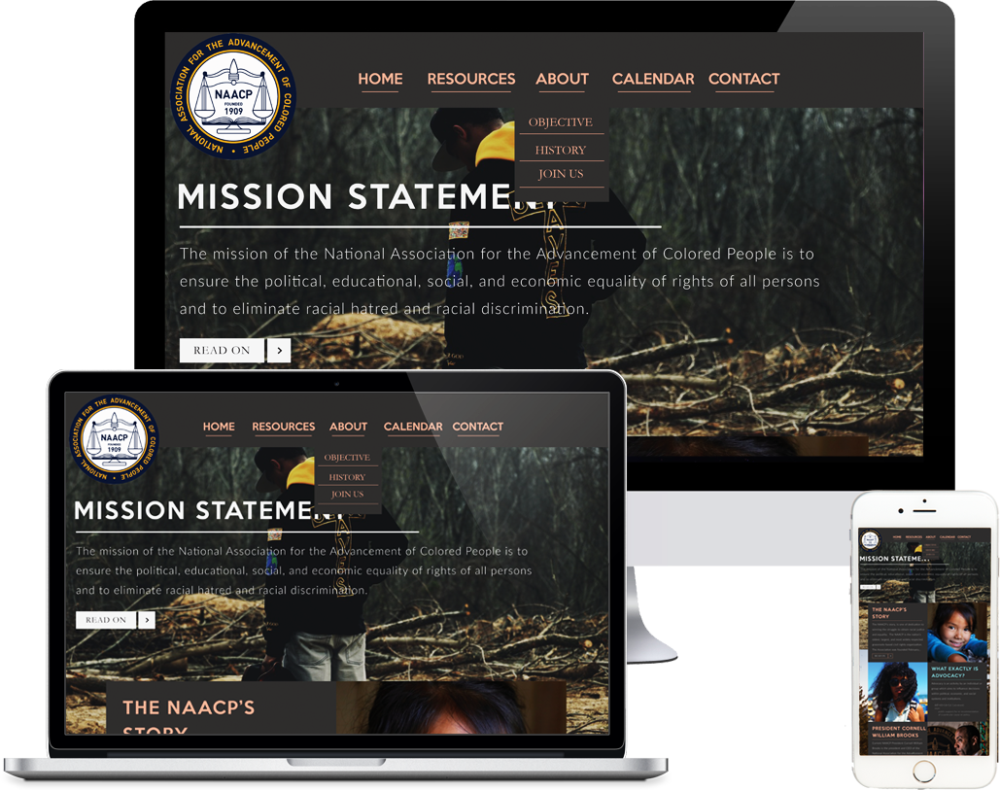

NAACP LAS VEGAS
http://naacplasvegas.com

One of the largest projects I’ve worked on, I was tasked with completely redesigning the NAACP (National Association for the Advancement of Colored People) Las Vegas website. Apart of a small collaborative group with two partners, I was the one who drafted the initial few ideas for multiple pages. The new design was meant to be much more sleek and smooth, while still maintaining some of the older aspects from the site prior. To do this, we made it so that more images and solid colors were used while still keeping the same color scheme as an accent to make certain parts pop-out among the rest.